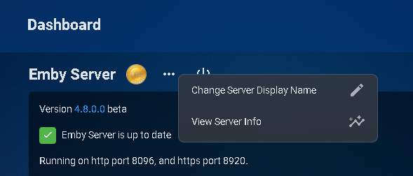
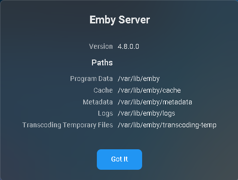

Beschädigte Datenbank
Wenn Ihre Server-Logdatei SQLite-Fehler wie im folgenden Beispiel zeigt, benötigt Ihre library.db-Datei Aufmerksamkeit.
SQLitePCL.pretty.SQLiteException
Was kann dies verursachen
Typische Ursachen dafür sind plötzliche und abrupte Beendigungen des Emby-Serverprozesses, wie z.B. ein Stromausfall, Absturz des Betriebssystems, erzwungenes Beenden des Serverprozesses usw.
Speicherort der Datenbankdateien finden
Dies lässt sich leicht über das obere Menü direkt über dem Server-Informationsfeld finden.

Klicken Sie auf Serverinfo anzeigen

Wir benötigen den Standort der Library-Datenbankdateien. Sie befinden sich im "data"-Verzeichnis unter dem ersten angezeigten Pfad.
/var/lib/emby/data ist der zu verwendende Speicherort für jede der untenstehenden Lösungen.
Lösungsansätze in dieser Reihenfolge ausprobieren
Entfernen von Datenbanksperren
Emby herunterfahren
Zum Ordner navigieren, der Ihre Datenbankdatei enthält
Löschen von library.db-shm & library.db-wal
Emby neu starten
Überprüfen Sie Ihren Server-Log auf SQLite-Fehler und fahren Sie nur mit dem nächsten Schritt fort, wenn nötig
Datenbankintegrität überprüfen und Datenbank wiederherstellen
Dieser Schritt erfordert die Verwendung eines SQLite-Editors, der von sqlite.org heruntergeladen werden kann. Wenn Sie einen grafischen Editor bevorzugen, können Sie den DB Browser for SQLite herunterladen, der für die meisten Plattformen verfügbar ist.
Integritätsprüfung durchlaufen
Öffnen Sie die library.db-Datenbank und führen Sie den folgenden SQL-Befehl aus:
PRAGMA integrity_check
Wenn Sie das Befehlszeilen-Tool verwenden, versuchen Sie folgendes
sqlite3 library.db "PRAGMA integrity_check"
Dies sollte eine Integritätsprüfung mit "OK" zurückgeben, ohne dass Fehler gemeldet werden. Wenn Fehler gemeldet werden, müssen wir die Datenbank wiederherstellen.
library.db wiederherstellen
Was wir tun müssen, ist, alle Daten aus der Datenbank in eine Textdatei zu exportieren und diese dann in eine neu erstellte Datenbank zu laden. Dies kann mit einem einzigen Befehl unter Verwendung des SQLite-Befehlszeileneditors erfolgen.
Führen Sie folgenden Befehl aus
sqlite3 library.db ".recover" | sqlite3 library-recovered.db
(dies kann eine Weile dauern, warten Sie bitte, bis der Vorgang abgeschlossen ist)Wir werden nun die Integrität unserer wiederhergestellten Datenbank prüfen (wie oben) unter Verwendung von
sqlite3 library-recovered.db "PRAGMA integrity_check"
Dies sollte eine Integritätsprüfung mit "OK" zurückgeben, ohne dass Fehler gemeldet werden. Wenn Fehler gemeldet werden, melden Sie dies bitte im Forum, bevor Sie mit dem Zurücksetzen der Library-Datenbank fortfahren. Wenn "OK" und keine Fehler gemeldet werden, fahren Sie mit Schritt 3 fort.
Erstellen Sie eine Kopie von både library.db und library-recovered.db
Benennen Sie library.db in library.old um
Benennen Sie library-recovered.db in library.db um
Emby Server neu starten
Überprüfen Sie Ihren Server-Log auf SQLite-Fehler und fahren Sie nur mit dem nächsten Schritt fort, wenn nötig
Schritte zum Zurücksetzen der Library-Datenbank & Neu Laden
Emby herunterfahren
Wechseln Sie zum oben gefundenen Speicherort der Datenbank, der Ihre Datenbankdateien enthält
Benennen Sie library.db in library.corrupt um
Emby neu starten
Führen Sie einen vollständigen Library-Scan durch